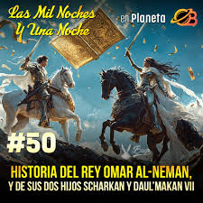
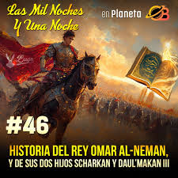

<meta charset="UTF-8">
<link rel="stylesheet" href="css/estilo1.css">
<link rel="stylesheet" href="css/libro1-estilos.css">
<link href="https://fonts.googleapis.com/css2?family=Open+Sans:wght@300;400;600;700&display=swap" rel="stylesheet">

<!-- Fragmento para inyectar en pagina.html (rutas relativas a pagina.html) -->
<article class="libro-detalle">

    <div class="libro-encabezado">
        <h2 class="titulo-seccion">Las mil y una noches</h2>
        <p class="libro-subtitulo">Relato: «El rey Omar Al-Neman y de sus dos hijos Scharkan y Daul'Makan»</p>
    </div>

    <!-- Portada + ficha del cuento -->
    <section class="libro-ficha">
        <figure class="libro-portada">
            
            <figcaption>Ilustración de portada</figcaption>
        </figure>

        <div class="libro-datos">
            <h3>Ficha del cuento</h3>
            <ul>
                <li><strong>Nombre original:</strong> ألف ليلة وليلة (<em>Alf layla wa-layla</em>)</li>
                <li><strong>Nombre en español:</strong> Las mil y una noches</li>
                <li><strong>Relato:</strong> El rey Omar Al-Neman y de sus dos hijos Scharkan y Daul'Makan</li>
                <li><strong>Autoría:</strong> Anónima y colectiva (recopilación de cuentos populares)</li>
                <li><strong>Época:</strong> Recopilación entre los siglos VIII y XIV aproximadamente</li>
                <li><strong>Origen:</strong> Medio Oriente</li>
                <li><strong>Género:</strong> Cuento de aventuras y fantasía</li>
                <li><strong>Idioma original:</strong> Árabe</li>
            </ul>
        </div>
    </section>

    <!-- Audio -->
    <section class="libro-audio">
        <h3>Escucha la reseña</h3>
        <p>Toda la información de esta página, narrada en audio.</p>
        <audio controls preload="none">
            <source src="audios/omar-al-neman.mp3" type="audio/mpeg">
            Tu navegador no admite el elemento de audio.
        </audio>
    </section>

    <!-- Personajes -->
    <section class="libro-bloque">
        <h3>Personajes principales</h3>
        <div class="libro-personajes">
            <div class="libro-personaje">
                <h4>Omar Al-Neman</h4>
                <p>Es el poderoso rey de Bagdad y padre de Scharkan, Daul'Makan y Nozhatú.</p>
            </div>
            <div class="libro-personaje">
                <h4>Scharkan</h4>
                <p>Es el hijo mayor del rey. Destaca por su valentía y habilidad como guerrero.</p>
            </div>
            <div class="libro-personaje">
                <h4>Daul'Makan</h4>
                <p>Es uno de los hijos del rey y hermano gemelo de Nozhatú. Vive diferentes aventuras durante sus viajes.</p>
            </div>
            <div class="libro-personaje">
                <h4>Nozhatú</h4>
                <p>Es la hermana gemela de Daul'Makan y lo acompaña durante parte de sus aventuras.</p>
            </div>
            <div class="libro-personaje">
                <h4>Visir Dandán</h4>
                <p>Es un importante consejero y jefe militar que participa en las campañas del reino.</p>
            </div>
        </div>
    </section>

    <!-- Resumen -->
    <section class="libro-bloque">
        <h3>Resumen</h3>
        <p>La historia comienza en Bagdad, donde gobierna el poderoso rey Omar Al-Neman. Su hijo mayor, Scharkan, es un joven valiente y experto en el combate, por lo que su padre lo considera su futuro sucesor.</p>
        <p>Tiempo después, una de las mujeres del rey queda embarazada y da a luz a dos gemelos: Daul'Makan y Nozhatú. Mientras tanto, Scharkan se encuentra lejos del palacio realizando campañas militares y desconoce durante un tiempo la existencia de sus hermanos.</p>
        <p>La situación del reino cambia cuando surgen conflictos con otros territorios. Scharkan participa en enfrentamientos y demuestra su valentía. Por otro lado, Daul'Makan y Nozhatú emprenden un viaje que los lleva a vivir diferentes dificultades y aventuras.</p>
        <p>Conforme avanza la historia, aparecen nuevos personajes, enfrentamientos entre musulmanes y cristianos, engaños y decisiones que afectan a toda la familia real. Los hermanos deberán enfrentar numerosas pruebas mientras el destino del reino cambia constantemente.</p>
        <p class="libro-nota">Aviso: este resumen presenta los acontecimientos principales del relato, que continúa durante muchas noches.</p>
    </section>

    <!-- Enseñanzas -->
    <section class="libro-bloque">
        <h3>3 enseñanzas del cuento</h3>
        <ol class="libro-ensenanzas">
            <li>
                <strong>La importancia de la familia.</strong>
                Los lazos familiares son importantes y deben cuidarse incluso cuando existen problemas y diferencias.
            </li>
            <li>
                <strong>La valentía ante las dificultades.</strong>
                Los personajes enfrentan situaciones peligrosas y demuestran que es importante tener valor para seguir adelante.
            </li>
            <li>
                <strong>Las decisiones tienen consecuencias.</strong>
                Las acciones de los gobernantes y de las personas pueden cambiar el destino de muchas vidas.
            </li>
        </ol>
    </section>

    <!-- Ilustraciones -->
    <section class="libro-bloque">
        <h3>Ilustraciones de la obra</h3>
        <div class="libro-galeria">
            <figure>
                
                <figcaption>El rey Omar Al-Neman</figcaption>
            </figure>
            <figure>
                
                <figcaption>El príncipe Scharkan</figcaption>
            </figure>
            <figure>
                
                <figcaption>Daul'Makan y Nozhatú</figcaption>
            </figure>
        </div>
    </section>

    <!-- Dónde conseguirlo -->
    <section class="libro-bloque libro-comprar">
        <h3>Dónde conseguir el libro</h3>
        <ul>
            <li>
                <strong>Consultar el relato:</strong>
                <a href="https://es.wikisource.org/wiki/Las_mil_y_una_noches%3A74" target="_blank" rel="noopener">Historia del rey Omar Al-Neman en Wikisource</a>
            </li>
            <li>
                <strong>Leer gratis (texto en español):</strong>
                <a href="https://es.wikisource.org/wiki/El_libro_de_las_mil_noches_y_una_noche/Tomo_IV" target="_blank" rel="noopener">Las mil noches y una noche, Tomo IV</a>
            </li>
        </ul>
    </section>

</article>